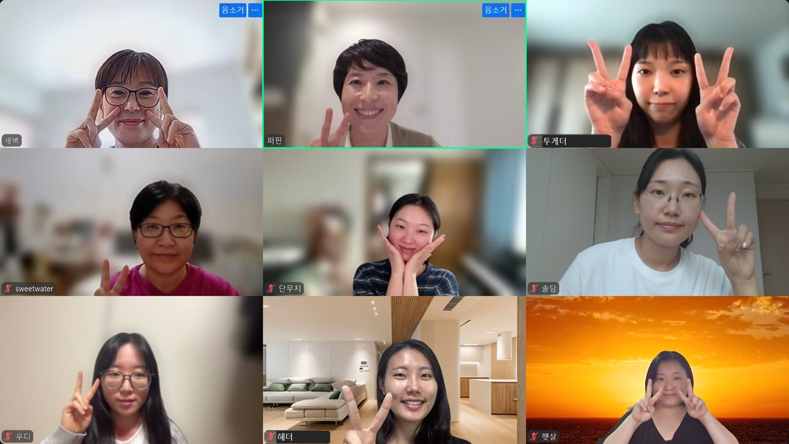

나는 시작할 곳에서 시작하는가
산티아고에 닿은 순례자 가운데 몇은 거기서 멈추지 않고 바다가 보이는 피스테라까지 사흘을 더 걷는다. 1구간을 마친 여덟 분이 이번 주부터 그 길에 들어섰다. 지난 넉 주가 각자의 자산을 세우는 길이었다. 2구간은 그것이 사람을 만나고 값을 받는 자리까지 가는 길이다.
이번 주 필독서는 게리 바이너척의 『스타트업 3개월 뒤 당신이 기필코 묻게 될 299가지』다. 책 이야기와 함께 끝점을 먼저 잡자는 이야기가 나왔다. 새 일을 앞둔 사람은 고민이 많다. 내가 정말 하고 싶은 일이 무엇인지. 성공했을 때 의미 있고 행복한 자리가 어디인지. 지금의 한 걸음은 그 끝점에서 거꾸로 정해진다. 당장의 수익도 좋다. 그것이 나의 끝점과 이어져 있는가. 나는 지금 시작할 곳에서 시작하고 있는가.
새 길 앞에서 뒤로 돌아가고 싶은 마음도 함께 놓였다. 그 마음 아래에는 두려움이 있다. 두려움과 맞서야 하는 지점이 2구간에 있다.
거기 진짜 뭐가 많아요. 우리가 하는 모든 고민 있잖아요. 다 거기 있더라고요.
— 별지기님 · 체크인 · 콤포스텔라 강의실을 처음부터 다시 열어 보고
다 넣었다가, 다 엎고, 얇게
에이전트 상품을 짓는 별지기님이 화면을 열었다. 자기가 만든 앱과 강의와 비서를 한자리에 모은 사이트다. 만원 안쪽의 작은 앱이 네댓 개, 짧은 영상을 틀로 찍어 내는 강의 하나, 그리고 마케팅 비서. 비서에는 처음에 기능을 아주 많이 넣었다. 이것도 붙이고 저것도 붙이다 보니 무거워졌다. 모른다고 하거나 못 하겠다고 하는 일이 늘었다. 보름 넘게 만든 것을 다 엎었다. 지금은 얇은 판이다. 데이터를 쌓고 기억하고 방향을 짚어 주는 데까지만.
내가 모든 걸 구현해 주려고 하다가 그렇게 막혔구나.
— 별지기님 · 에이전트 상품
광고 이야기도 이 자리에서 나왔다. 찾아보니 인스타그램은 돈을 많이 쓴 광고를 먼저 보여 주는 구조라고 했다. 적은 돈으로 돌린 좋은 광고는 묻힌다. 그래서 간장게장을 파는 사람이 간장게장을 들고 춤을 춘다. 광고 대신 자기 프로필로 사람을 끌어오는 길이다. 『팬베이스』라는 책을 읽다가 든 생각도 한 줄 보탰다. 디퍼가 바로 그 팬베이스라는 말이었다.
다른 별지기님이 물었다. 인사이트 공유회 말고도 이런 것을 볼 수 있는 자리가 있으면 좋겠다고. 허리 알림 앱을 주변에 알려 주고 싶은데 클로드부터 설명해야 해서 링크를 보내기가 쉽지 않다고 했다. 사이트가 열리면 거기서 바로 내려받을 수 있게 하고 옆에 디퍼 채널과 별지기님들의 강의 링크도 두겠다는 답이 돌아왔다.
인사이트 공유의 창 같은 거예요. 모음집.
— 별지기님 · 사이트를 보고
달리는 게 아니라 걷는 거죠
빠르게 짓고 빠르게 내놓는 별지기님 다음에 느린 걸음이 자기 몫이라는 별지기님이 이어받았다. 뜨개 가게와 디퍼 살롱과 뉴스레터. 이 셋을 중심에 두고 조금씩 뻗어 가겠다고 했다. 뜨개 원고를 받아 작은 책으로 편집해 주는 일도 그 가지 가운데 하나다. 재미를 느껴 끈기 있게 하는 기간이 삼 년쯤 된다. 이번에는 십 년을 보고 가자고 했다.
할 수 있는 한도 내에서 온라인과 오프라인의 균형을 맞추면서, 달리는 게 아니라 걷는 거죠.
— 별지기님 · 비즈니스 나눔
그리고 집을 한 채 보여 주었다. 빨간 머리 앤의 초록 지붕 집이다. 매일 하는 아홉 가지 루틴이 방마다 들어 있다. 아침 묵상을 아직 안 했으면 식탁의 커피잔에서 김이 오른다. 음악을 틀면 앤이 헤드폰을 끼고 듣는다. 뉴스레터 쓰는 방에는 다음 호까지 며칠 남았는지 적혀 있다. 다 쓰면 신문이 펼쳐진다. 뜨개 바구니에는 다 뜬 것이 들어가고 의자 위에는 뜨는 중인 것이 걸려 있다. 앤을 두 번 누르면 침대에 누워 잔다. 그림은 한 조각씩 따로 만들어 클로드가 집 안에 놓았다. 그동안 나눈 대화가 팔백 번이라고 했다.
클로드가 너무 제가 원하는 대로 다 해 준다는 거예요. 그게 되게 놀라웠고.
— 별지기님 · 초록 지붕 집
작업실
인스타툰 작업대를 짓는 별지기님은 살롱의 꼴부터 물었다. 넉 주 과정으로 수업을 이끄는 대신, 작업대 쓰는 법을 처음에 알려 드리고 과제를 하나씩 내어 단톡방에서 함께 이야기하다가 마지막에 공유회처럼 한 번 모이는 형식도 되는지. 부담을 덜 갖고 할 수 있는 방법으로 하고 싶다고 했다.
화면에는 작업실이 떠 있었다. 할머니와 할아버지의 생신에 틀어 드리려고 만든 애니메이션 영상이 시작이었다. 얼굴이 같게 나오도록 캐릭터 시트를 한 장 만든다. 사진을 넣고 장면을 설명하면 코덱스가 그 장면을 그린다. 자막도 그 안에서 단다. 이것을 생신 선물로 만들어 파는 일을 기획하고 있다. 그림체에서 AI 티가 덜 나게 하려고 다른 그림체도 시험하는 중이다. 크몽에 올리라는 말이 바로 나왔다. 채팅창에는 작업실을 만드는 살롱을 열어 달라는 말이 올라왔다.
이 작업실이 진짜 대박인 것 같아요. 혁명적이에요.
— 별지기님 · 작업실을 보고
로그인 없이 열리게
어제 부산에서 나온 이야기를 한 별지기님이 다시 꺼냈다. 각자 탐나는 것이 있으니 우리끼리 나누어 쓰자는 것이다. 프롬프트와 앱에 작은 값을 매겨 서로 분양하고 받은 사람이 자기 것으로 고쳐 쓰는 그림이다.
우리끼리 구현해서 자기 걸로 만들고, 뭐 그렇게 하자면서 그런 얘기들을 했었는데 좀 재미있을 것 같더라고요.
— 별지기님 · 비즈니스 나눔
자기가 만든 것도 하나 보여 주었다. 교회 예배 공지와 사진을 모아 두는 앱이다. 맡은 사람에게 손이 가는 일이라 만들었다. 다른 분이 먼저 받아 썼다. 클로드로 공유하니 로그인이 필요했다. 로그인 없이 바로 열리게 하고 바탕화면에서도 실행되게 하고 휴대폰과도 이어지게 고쳤다. 편집할 때만 비밀번호를 넣는다. 여섯 자리는 못 외우니 네 자리로 했다.
아직은 사람의 영역
책 디자인 살롱을 기획한 별지기님은 웹사이트가 바뀌어 온 순서를 보여 주었다. 처음에는 클로드가 자료를 받아 지었다. 마음에 차지 않아 비주얼은 코덱스로 뽑게 했다. 그래도 아쉬워서 그림 조각을 투명한 배경으로 내려받아 피그마에 직접 얹었다. 큰 틀만 잡아 달라 하고 자리는 손으로 잡았다. 그것을 통째로 SVG로 내보내 주니 클로드가 읽고 그대로 구현했다. 결제와 로그인이 필요해 아임웹으로 옮겼다. 이미지를 뽑아 두면 폴더를 알아서 찾아 넣어 주어 그 뒤로는 손이 거의 가지 않았다.
디자이너로 일할 때는 피그마에서 잡은 시안을 아임웹으로 옮기는 일만으로도 에너지가 많이 들었다. 그 일이 쉬워진 세상을 보며 기뻐하다가도, 처음 시안을 마음에 들게 잡는 일은 아직 기계가 해 주지 못한다고 했다.
이건 어쩔 수 없이 아직까지는 사람의 영역인 건가.
— 별지기님 · 웹사이트 변천사
일단 하나를 만들어 봐야
웹사이트 만들기 살롱을 기획한 별지기님은 책방 하나를 예시로 삼아 사이트를 짓고 있었다. 단계가 잘 넘어가지 않아 반의 반쯤 왔을 때 상세페이지를 먼저 만들어 보라는 말을 듣고 하루 만에 상세페이지를 지었다. 공간이 있는 사람, 블로그나 인스타그램에 글이 쌓인 사람이 먼저 떠올랐다. 이제 시작하는 사람이라면 인터뷰로 그 사람의 경로를 모아 재료를 만든다. 한 페이지짜리 사이트에 첫 화면은 영상처럼 움직인다. 누르면 하나씩 뜨는 움직임이 들어간다. AI 티가 덜 나게 하는 디자인 스킬을 찾아 깔아 보았는데 그래도 티가 나서 그것이 숙제라고 했다. 수업에서는 첫 화면과 중간의 움직임만 핵심으로 알려 주고 나머지는 각자의 숙제로 둔다. 처음에는 일대일 온라인으로 시작할 생각이다.
일단 하나를 만들어 봐야 알려 줄 수 있을 것 같아서.
— 별지기님 · 웹사이트 살롱
반응을 보고 바뀐다
접수창구를 기획한 별지기님은 사람들이 어떻게 들어오는지 눈에 보이게 그리는 일을 시험하고 있었다. 가진 데이터로 예시를 돌려 보았는데 생각만큼 예쁘게 나오지 않았다. 그래서 학원 선생님이 클로드를 깔지 않아도 시간표를 올리면 정리해 주는 작은 서비스로 좁혀 볼까 하는 생각도 함께 올렸다. 지난주에 코덱스를 연결했다. 이것저것 벌여 둔 것을 어디서 매듭지을지 고르는 중이다.
전자책 살롱을 연 별지기님은 광고를 돌리기 시작했다. 링크를 타고 들어오는 것까지는 확인이 됐다. 고슴도치는 그 결과를 보고 페이지를 다시 짰다. 신청하기 버튼을 위로 올렸다. 과정을 마치면 무엇이 남는지 눈에 띄게 적었다. 처음에 정해 둔 대로 가는 것이 아니라 반응을 보고 바뀌는 것을 보며 든든했다고 한다. 전자책을 만드는 뱃사공도 손을 보았다. 이제 EPUB과 PDF와 종이책 조판까지 세 가지로 받고, 읽어 들이는 원고 형식도 넷으로 넓혔다.
미리 정해 둔 대로 가는 게 아니라, 반응을 보고 또 이렇게 바뀔 수도 있구나.
— 별지기님 · 광고를 돌리며
집에서도 반응이 있었다. 화면 한쪽에서 할 일을 다 마치면 배를 내놓고 눕는 캐릭터를 보더니 남편과 아이가 자기 노트북에도 깔아 달라고 했다. 돈 준비하라고 말해 두었다고 했다.
상품 위에 철학
마무리에 세 층 이야기가 놓였다. 맨 위에는 변하지 않는 것, 내 사업 철학이 있다. 내가 바라는 삶의 꼴과 누구와도 타협하지 않는 나만의 기준이 거기 들어 있다. 그 아래가 전략이다. 어떤 시장에서 누구에게 어떤 삶을 전하며 영향을 끼칠지. 그 영향이 가치와 바뀌어 돈으로 돌아오는 길이다. 맨 아래가 전술이다. 이번에 무엇을 열지, 얼마를 받을지, 일정을 어떻게 할지. 전술은 늘 바뀐다. 이번 달 해 보고 다음 달 바꾸면 된다. 값도 바꾸면 된다. 거기 발목이 잡혀 맨 위의 철학이 흔들리는 일만 없으면 된다.
변하지 않는 것은 이왕이면 문화를 팔았으면 좋겠다는 말이 이어졌다. 상품 하나가 아니라 삶의 꼴과 문화와 영향력을 파는 것이다. 그러려면 내 상품을 내가 사랑해야 한다. 자기 확신에 차서 상세페이지를 쓰면 그 에너지가 페이지를 뚫고 나온다. 에너지는 디자인이나 구성이나 값에 있지 않다.
디퍼가 처음 생길 때 모두가 AI 공부를 어떻게 해야 하느냐고 묻던 자리에서 디퍼님들은 세컨브레인부터 만들었다. 석 달이 지나자 여러 모델을 끼워 개발할 수 있는 환경이 되었다. 오늘 작업실과 웹사이트가 거기서 나왔다. 수익화도 그런 방향이 하나 있다. 퍼스널이다. 여럿을 한자리에 모아 가르치기보다 그 사람에게 맞게 하고 그 사람이 자기 필요에 맞춰 쓰도록 돕는 쪽이다. 맞춤이 들어가면 값을 조금씩 높일 수 있다.
값이 높은 상품은 광고로 모르는 사람을 데려와 팔리지 않는다. 가서 전하고 와서 권한다. 사람과 사람으로 전해진다. 처음에는 그렇게 품을 팔아야 무엇이든 시작된다. 내 철학과 본질에 맞는 일이어야 그 품이 사랑하면서 이루어진다.
맞아요, 그걸 느꼈어요. 상품 위에 철학이 있구나.
— 별지기님 · 채팅창
이번 주에 정한 것은 셋이다. 별지기 살롱 공지는 10월 21일 수요일까지 긱어스 「[deeper] 살롱 소식」에 각자 올린다. 필독서는 오래된 책이라 구하기 어려우면 앞부분을 PDF로 나눈다. 다음 모임은 10월 26일 월요일 오전 열 시다.